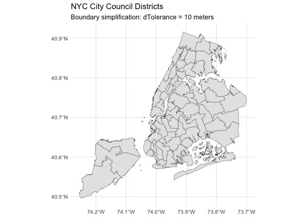
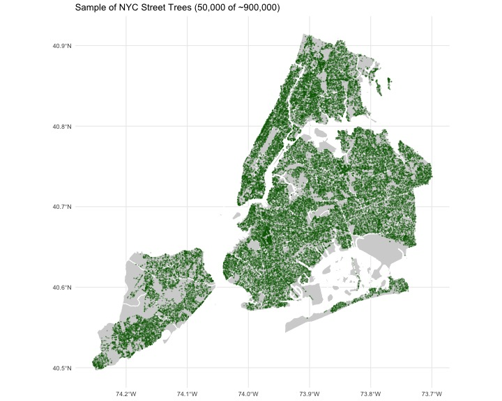
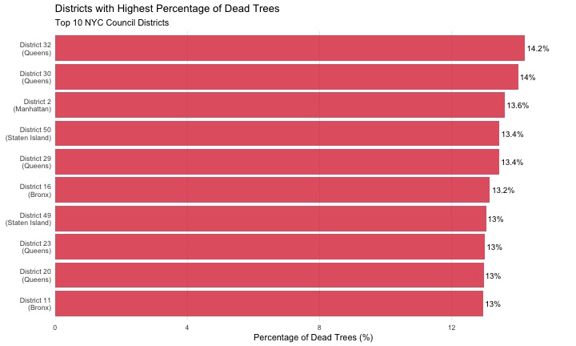
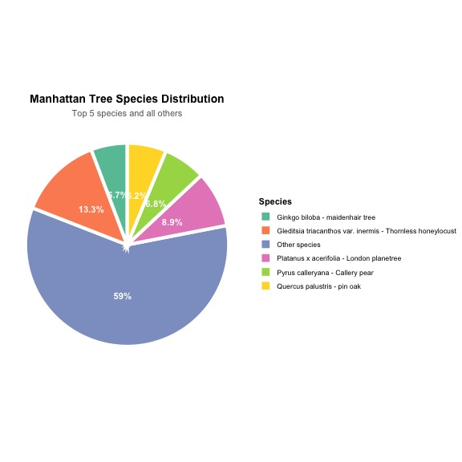
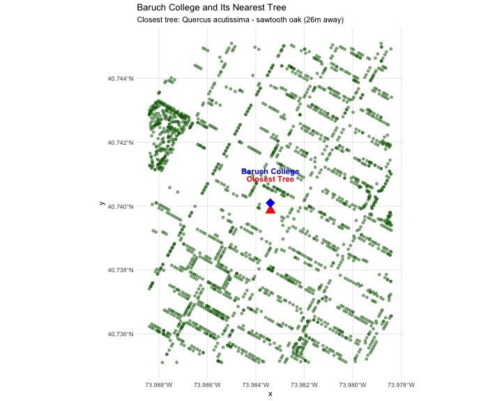
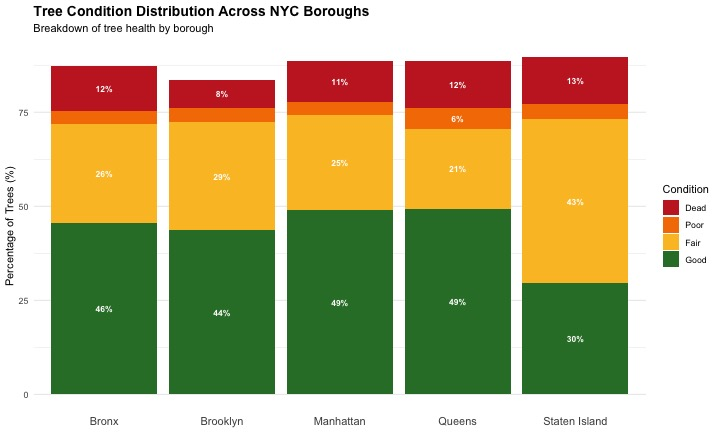
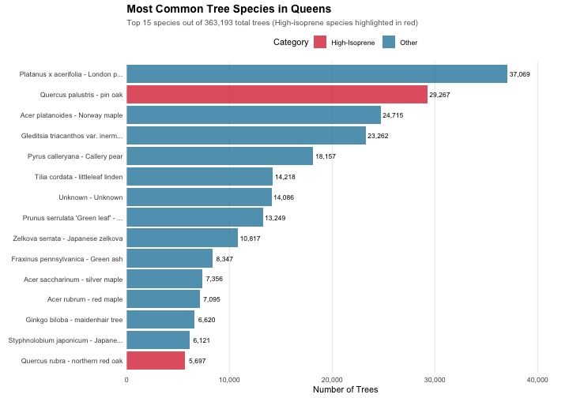
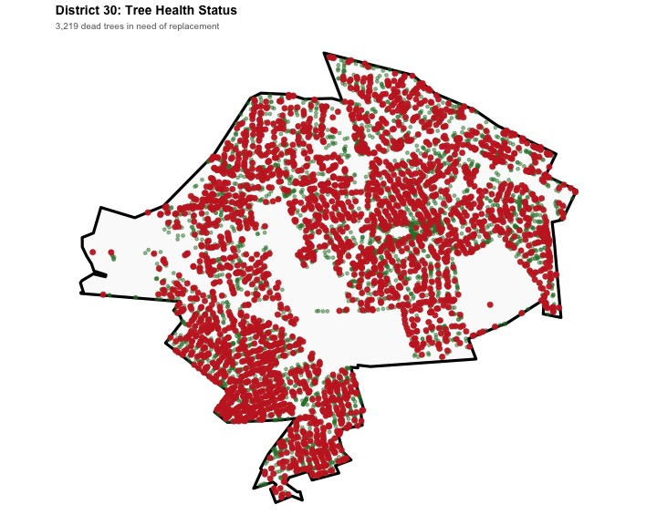
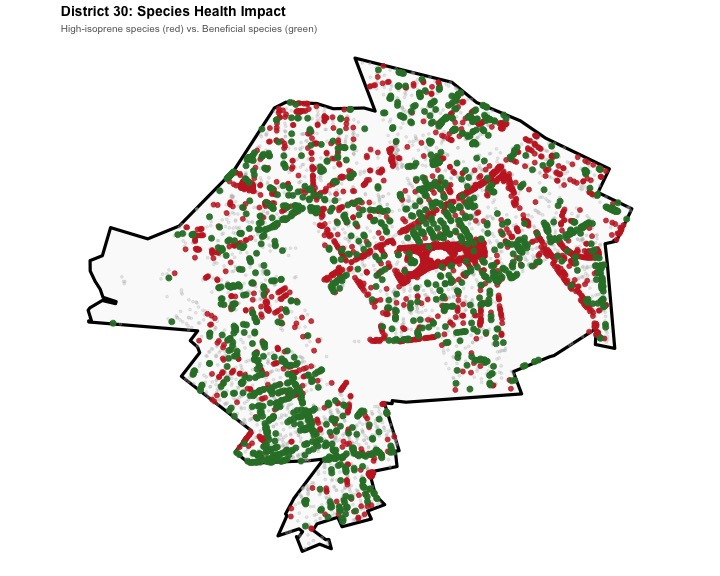
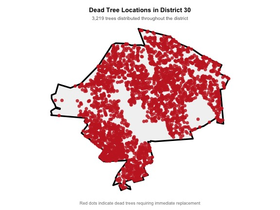

Show Library Code
# Load required packages
library(sf)
library(dplyr)
library(ggplot2)
This project examines the current tree species in New York City in order to make a data-informed suggestion for a new parks initiative.
This project utilizes data made available by the NYC Department of Planning. This dataset contains 51 districts with boundary information, allowing for geographic data analysis by district.
# Load required packages
library(sf)
library(dplyr)
library(ggplot2)# Function to download NYC district boundaries
download_nyc_districts <- function() {
# Define paths
data_dir <- "data/mp03"
zip_file <- file.path(data_dir, "nycc_districts.zip")
# Define the URL for NYC City Council Districts (Clipped to Shoreline)
url <- "https://www.nyc.gov/assets/planning/download/zip/data-maps/open-data/nycc_24d.zip"
# Create directory if needed
if (!dir.exists(data_dir)) {
dir.create(data_dir, recursive = TRUE)
}
# Download zip file if needed
if (!file.exists(zip_file)) {
download.file(url, zip_file, mode = "wb", quiet = TRUE)
}
# Unzip if needed
shp_files <- list.files(data_dir, pattern = "\\.shp$", full.names = TRUE, recursive = TRUE)
if (length(shp_files) == 0) {
unzip(zip_file, exdir = data_dir)
shp_files <- list.files(data_dir, pattern = "\\.shp$", full.names = TRUE, recursive = TRUE)
}
# Check if we found any shapefiles
if (length(shp_files) == 0) {
stop("No .shp files found after unzipping.")
}
# Read the shapefile
districts <- st_read(shp_files[1], quiet = TRUE)
# Transform to WGS84
districts <- st_transform(districts, crs = "WGS84")
return(districts)
}
# Load the data
nyc_districts <- download_nyc_districts()# Simplify district boundaries to improve plotting performance
# Testing different dTolerance values to find optimal balance
nyc_districts <- nyc_districts |>
mutate(geometry = st_simplify(geometry, dTolerance = 10))# Test plot to verify simplification doesn't degrade visual quality
ggplot(nyc_districts) +
geom_sf() +
theme_minimal() +
labs(title = "NYC City Council Districts",
subtitle = "Boundary simplification: dTolerance = 10 meters")
library(httr2)
library(sf)
library(dplyr)
# Function to download NYC Tree Points data using the API
download_tree_points <- function() {
# Define paths
data_dir <- "data/mp03"
# Create directory if needed
if (!dir.exists(data_dir)) {
dir.create(data_dir, recursive = TRUE)
}
# Base API URL (from NYC OpenData - GeoJSON format)
base_url <- "https://data.cityofnewyork.us/resource/hn5i-inap.geojson"
# Set parameters for pagination
limit <- 50000 # Number of records per request (50k is a good balance)
offset <- 0 # Starting position
batch_num <- 0 # For naming files
all_data <- list() # Store all downloaded data
# Loop to download all data in chunks
repeat {
# Define the output file name for this batch
output_file <- file.path(data_dir, paste0("tree_data_", offset, ".geojson"))
# Check if this batch already exists locally
if (file.exists(output_file)) {
message("Batch ", batch_num, " already exists (offset=", offset, "), reading from file.")
# Read the existing file
batch_data <- st_read(output_file, quiet = TRUE)
} else {
# Download this batch using httr2
message("Downloading batch ", batch_num, " (offset=", offset, ", limit=", limit, ")...")
response <- request(base_url) |>
req_url_query(`$limit` = limit, `$offset` = offset) |>
req_perform()
# Save the response to file
resp_body_raw(response) |> writeBin(output_file)
message("Saved to: ", output_file)
# Read the downloaded data
batch_data <- st_read(output_file, quiet = TRUE)
}
# Add to our collection
all_data[[batch_num + 1]] <- batch_data
# Check if we got fewer records than requested (end of data)
num_records <- nrow(batch_data)
message("Retrieved ", num_records, " records in this batch.")
if (num_records < limit) {
message("Reached end of dataset.")
break
}
# Update offset for next batch
offset <- offset + limit
batch_num <- batch_num + 1
}
# Combine all batches
message("Combining all batches...")
all_trees <- bind_rows(all_data)
message("Total trees downloaded: ", nrow(all_trees))
return(all_trees)
}
# Download the tree points data
nyc_trees <- download_tree_points()In order to examine specific tree species, data is used from the NYC Forestry Tree Points dataset from NYC OpenData.
This visualization plots tree points using a simplified sample in order to enhance clarity and reduce visual density.
# Option: Use a sample of trees for clearer visualization
set.seed(123)
trees_sample <- nyc_trees |> slice_sample(n = 50000)
ggplot() +
geom_sf(data = nyc_districts,
fill = "lightgray",
color = "white",
linewidth = 0.5) +
geom_sf(data = trees_sample,
color = "darkgreen",
alpha = 0.3,
size = 0.1) +
theme_minimal() +
labs(title = "Sample of NYC Street Trees (50,000 of ~900,000)")
# Join trees to districts using spatial relationship
# This adds district information to each tree
trees_with_districts <- st_join(
nyc_trees, # Points (first argument)
nyc_districts, # Polygons (second argument)
join = st_intersects # Join type: which district does each tree fall in?
)
# Verify the join worked
cat("Trees with district info:", nrow(trees_with_districts), "\n")Trees with district info: 1093683 cat("New columns added:",
paste(setdiff(names(trees_with_districts), names(nyc_trees)), collapse = ", "),
"\n")New columns added: CounDist, Shape_Leng, Shape_Area Which council district has the most trees?
library(knitr)
library(kableExtra)
# Count trees per district
trees_per_district <- trees_with_districts |>
st_drop_geometry() |>
group_by(CounDist) |>
summarise(tree_count = n(), .groups = "drop") |>
arrange(desc(tree_count))
# Get top district for callout
top_district <- trees_per_district |> slice(1)
# Determine borough
top_borough <- case_when(
top_district$CounDist >= 1 & top_district$CounDist <= 10 ~ "Manhattan",
top_district$CounDist >= 11 & top_district$CounDist <= 18 ~ "Bronx",
top_district$CounDist >= 19 & top_district$CounDist <= 32 ~ "Queens",
top_district$CounDist >= 33 & top_district$CounDist <= 47 ~ "Brooklyn",
top_district$CounDist >= 48 & top_district$CounDist <= 51 ~ "Staten Island"
)The table below shows the Top 10 council districts by total tree count:
library(knitr)
library(kableExtra)
# Count trees per district and add borough information
trees_per_district_with_borough <- trees_with_districts |>
st_drop_geometry() |>
group_by(CounDist) |>
summarise(tree_count = n(), .groups = "drop") |>
mutate(
Borough = case_when(
CounDist >= 1 & CounDist <= 10 ~ "Manhattan",
CounDist >= 11 & CounDist <= 18 ~ "Bronx",
CounDist >= 19 & CounDist <= 32 ~ "Queens",
CounDist >= 33 & CounDist <= 47 ~ "Brooklyn",
CounDist >= 48 & CounDist <= 51 ~ "Staten Island",
TRUE ~ "Unknown"
)
) |>
arrange(desc(tree_count))
# Get top district for callout
top_district <- trees_per_district_with_borough |> slice(1)
# Create formatted table with top 10
trees_per_district_with_borough |>
slice_head(n = 10) |>
mutate(
Rank = row_number(),
tree_count_formatted = format(tree_count, big.mark = ",")
) |>
select(Rank, CounDist, Borough, tree_count_formatted) |>
kable(
col.names = c("Rank", "Council District", "Borough", "Number of Trees"),
align = c("c", "c", "l", "r"),
caption = "Top 10 NYC Council Districts by Tree Count"
) |>
kable_styling(
bootstrap_options = c("striped", "hover", "condensed"),
full_width = FALSE,
position = "left"
) |>
row_spec(1, bold = TRUE, color = "white", background = "#28a745")| Rank | Council District | Borough | Number of Trees |
|---|---|---|---|
| 1 | 51 | Staten Island | 70,927 |
| 2 | 50 | Staten Island | 52,507 |
| 3 | 19 | Queens | 49,829 |
| 4 | 23 | Queens | 44,842 |
| 5 | 13 | Bronx | 36,633 |
| 6 | 49 | Staten Island | 34,983 |
| 7 | 39 | Brooklyn | 32,439 |
| 8 | 31 | Queens | 31,351 |
| 9 | 32 | Queens | 30,318 |
| 10 | 27 | Queens | 29,270 |
Which council district has the highest density of trees (trees per area)?
Tree density represents the number of trees per square kilometer, accounting for the variation in the size of council districts.
library(knitr)
library(kableExtra)
# Calculate tree density for each district
tree_density <- trees_with_districts |>
st_drop_geometry() |>
group_by(CounDist) |>
summarise(tree_count = n(), .groups = "drop") |>
left_join(
nyc_districts |>
st_drop_geometry() |>
select(CounDist, Shape_Area),
by = "CounDist"
) |>
mutate(
Borough = case_when(
CounDist >= 1 & CounDist <= 10 ~ "Manhattan",
CounDist >= 11 & CounDist <= 18 ~ "Bronx",
CounDist >= 19 & CounDist <= 32 ~ "Queens",
CounDist >= 33 & CounDist <= 47 ~ "Brooklyn",
CounDist >= 48 & CounDist <= 51 ~ "Staten Island",
TRUE ~ "Unknown"
),
area_km2 = Shape_Area / 1e6,
density_per_km2 = tree_count / area_km2
) |>
arrange(desc(density_per_km2))
# Get top density district
top_density_district <- tree_density |> slice(1)The table below shows the Top 10 council districts ranked by tree density:
tree_density |>
slice_head(n = 10) |>
mutate(
Rank = row_number(),
tree_count_formatted = format(tree_count, big.mark = ","),
area_km2_formatted = round(area_km2, 2),
density_formatted = format(round(density_per_km2, 1), big.mark = ",")
) |>
select(Rank, CounDist, Borough, tree_count_formatted, area_km2_formatted, density_formatted) |>
kable(
col.names = c("Rank", "District", "Borough", "Total Trees", "Area (km²)", "Density (trees/km²)"),
align = c("c", "c", "l", "r", "r", "r"),
caption = "Top 10 NYC Council Districts by Tree Density"
) |>
kable_styling(
bootstrap_options = c("striped", "hover", "condensed"),
full_width = FALSE,
position = "left"
) |>
row_spec(1, bold = TRUE, color = "white", background = "#28a745")| Rank | District | Borough | Total Trees | Area (km²) | Density (trees/km²) |
|---|---|---|---|---|---|
| 1 | 7 | Manhattan | 15,457 | 55.19 | 280.1 |
| 2 | 39 | Brooklyn | 32,439 | 118.29 | 274.2 |
| 3 | 2 | Manhattan | 11,550 | 48.32 | 239.0 |
| 4 | 9 | Manhattan | 13,422 | 56.26 | 238.6 |
| 5 | 5 | Manhattan | 8,312 | 37.75 | 220.2 |
| 6 | 16 | Bronx | 13,518 | 62.08 | 217.7 |
| 7 | 14 | Bronx | 10,893 | 52.59 | 207.2 |
| 8 | 10 | Manhattan | 15,328 | 77.00 | 199.1 |
| 9 | 35 | Brooklyn | 15,040 | 79.44 | 189.3 |
| 10 | 41 | Brooklyn | 14,367 | 79.27 | 181.2 |
Tree density reveals that smaller, more compact districts in dense urban areas often achieve higher tree density than larger districts with larger areas.
Which District Has the Highest Fraction of Dead Trees?
Tree condition is an important indicator of tree health and influences maintenance needs. The tpcondition field classifies trees as Good, Fair, Poor, Dead, or other categories.
library(knitr)
library(kableExtra)
# Calculate dead tree statistics by district
dead_tree_analysis <- trees_with_districts |>
st_drop_geometry() |>
group_by(CounDist) |>
summarise(
total_trees = n(),
dead_trees = sum(tpcondition == "Dead", na.rm = TRUE),
good_trees = sum(tpcondition == "Good", na.rm = TRUE),
fair_trees = sum(tpcondition == "Fair", na.rm = TRUE),
poor_trees = sum(tpcondition == "Poor", na.rm = TRUE),
.groups = "drop"
) |>
mutate(
Borough = case_when(
CounDist >= 1 & CounDist <= 10 ~ "Manhattan",
CounDist >= 11 & CounDist <= 18 ~ "Bronx",
CounDist >= 19 & CounDist <= 32 ~ "Queens",
CounDist >= 33 & CounDist <= 47 ~ "Brooklyn",
CounDist >= 48 & CounDist <= 51 ~ "Staten Island",
TRUE ~ "Unknown"
),
pct_dead = (dead_trees / total_trees) * 100,
pct_good = (good_trees / total_trees) * 100
) |>
arrange(desc(pct_dead))
# Get district with highest dead tree percentage
worst_district <- dead_tree_analysis |> slice(1)The table below shows the Top 10 council districts with the highest percentage of dead trees:
dead_tree_analysis |>
slice_head(n = 10) |>
mutate(
Rank = row_number(),
total_trees_formatted = format(total_trees, big.mark = ","),
dead_trees_formatted = format(dead_trees, big.mark = ","),
pct_dead_formatted = paste0(round(pct_dead, 2), "%"),
pct_good_formatted = paste0(round(pct_good, 1), "%")
) |>
select(Rank, CounDist, Borough, total_trees_formatted, dead_trees_formatted,
pct_dead_formatted, pct_good_formatted) |>
kable(
col.names = c("Rank", "District", "Borough", "Total Trees", "Dead Trees",
"% Dead", "% Good"),
align = c("c", "c", "l", "r", "r", "r", "r"),
caption = "Top 10 NYC Council Districts by Percentage of Dead Trees"
) |>
kable_styling(
bootstrap_options = c("striped", "hover", "condensed"),
full_width = FALSE,
position = "left"
) |>
row_spec(1, bold = TRUE, color = "white", background = "#dc3545")| Rank | District | Borough | Total Trees | Dead Trees | % Dead | % Good |
|---|---|---|---|---|---|---|
| 1 | 32 | Queens | 30,318 | 4,307 | 14.21% | 44.1% |
| 2 | 30 | Queens | 22,972 | 3,219 | 14.01% | 47.7% |
| 3 | 2 | Manhattan | 11,550 | 1,570 | 13.59% | 46.2% |
| 4 | 50 | Staten Island | 52,507 | 7,052 | 13.43% | 32.5% |
| 5 | 29 | Queens | 19,904 | 2,672 | 13.42% | 45.9% |
| 6 | 16 | Bronx | 13,518 | 1,778 | 13.15% | 43.8% |
| 7 | 49 | Staten Island | 34,983 | 4,562 | 13.04% | 29.7% |
| 8 | 23 | Queens | 44,842 | 5,833 | 13.01% | 50.7% |
| 9 | 20 | Queens | 20,715 | 2,686 | 12.97% | 53.1% |
| 10 | 11 | Bronx | 27,817 | 3,605 | 12.96% | 42% |

Districts with higher levels of dead trees may require replacement programs to maintain their current urban canopy.
What is the most common tree species in Manhattan?
Manhattan’s contains a diverse array of tree species, all of which make up the borough’s green canopy. Understanding which species are most common helps inform future planting and maintenance needs.
library(knitr)
library(kableExtra)
library(ggplot2)
library(stringr)
# Ensure Borough column exists - create if needed
if(!"Borough" %in% names(trees_with_districts)) {
trees_with_districts <- trees_with_districts |>
mutate(
Borough = case_when(
CounDist >= 1 & CounDist <= 10 ~ "Manhattan",
CounDist >= 11 & CounDist <= 18 ~ "Bronx",
CounDist >= 19 & CounDist <= 32 ~ "Queens",
CounDist >= 33 & CounDist <= 47 ~ "Brooklyn",
CounDist >= 48 & CounDist <= 51 ~ "Staten Island",
TRUE ~ "Unknown"
)
)
}
# Find most common species in Manhattan
manhattan_species <- trees_with_districts |>
st_drop_geometry() |>
filter(Borough == "Manhattan") |>
group_by(genusspecies) |>
summarise(count = n(), .groups = "drop") |>
arrange(desc(count))
# Get top species
top_manhattan_species <- manhattan_species |> slice(1)
# Calculate totals and percentages
total_manhattan_trees <- sum(manhattan_species$count)
top_species_pct <- (top_manhattan_species$count / total_manhattan_trees) * 100The table below shows the Top 15 most common tree species in Manhattan:
| Rank | Tree Species | Count | % of Total |
|---|---|---|---|
| 1 | Gleditsia triacanthos var. inermis - Thornless honeylocust | 17,304 | 13.34% |
| 2 | Platanus x acerifolia - London planetree | 11,587 | 8.93% |
| 3 | Pyrus calleryana - Callery pear | 8,778 | 6.77% |
| 4 | Quercus palustris - pin oak | 8,100 | 6.25% |
| 5 | Ginkgo biloba - maidenhair tree | 7,453 | 5.75% |
| 6 | Zelkova serrata - Japanese zelkova | 5,774 | 4.45% |
| 7 | Styphnolobium japonicum - Japanese pagoda tree | 5,435 | 4.19% |
| 8 | Tilia cordata - littleleaf linden | 4,417 | 3.41% |
| 9 | Unknown - Unknown | 3,749 | 2.89% |
| 10 | Ulmus americana - American elm | 3,508 | 2.7% |
| 11 | Quercus rubra - northern red oak | 2,462 | 1.9% |
| 12 | Tilia americana - American basswood | 2,092 | 1.61% |
| 13 | Quercus bicolor - swamp white oak | 1,943 | 1.5% |
| 14 | Prunus - Cherry | 1,632 | 1.26% |
| 15 | Malus - apple | 1,572 | 1.21% |
The high prevalence of Honeylocust trees in Manhattan reflects a strategy that prioritizes species that thrive in dense urban areas. These environments have limited soil space and high pollution levels. This species’ resilience makes it an ideal candidate for continued planting in dense urban areas throughout the city.
library(ggplot2)
# Prepare data for pie chart
manhattan_pie_data <- manhattan_species |>
mutate(
percentage = (count / total_manhattan_trees) * 100,
category = if_else(row_number() <= 5, genusspecies, "Other species")
) |>
group_by(category) |>
summarise(
count = sum(count),
percentage = sum(percentage),
.groups = "drop"
) |>
arrange(desc(count))
# Create pie chart
ggplot(manhattan_pie_data, aes(x = "", y = count, fill = category)) +
geom_bar(stat = "identity", width = 1, color = "white", size = 2) +
coord_polar("y", start = 0) +
geom_text(aes(label = paste0(round(percentage, 1), "%")),
position = position_stack(vjust = 0.5),
size = 4,
fontface = "bold",
color = "white") +
scale_fill_brewer(palette = "Set2") +
labs(
title = "Manhattan Tree Species Distribution",
subtitle = "Top 5 species and all others",
fill = "Species"
) +
theme_void() +
theme(
plot.title = element_text(face = "bold", size = 14, hjust = 0.5),
plot.subtitle = element_text(size = 11, hjust = 0.5, color = "gray40"),
legend.position = "right",
legend.title = element_text(face = "bold")
)
What is the species of the tree closest to Baruch’s campus?
Baruch College is located at 55 Lexington Avenue in Manhattan. Spatial distance calculations can be used to identify the nearest street tree to campus.
library(sf)
library(dplyr)
library(knitr)
library(kableExtra)
library(ggplot2)
# Function to create spatial point
new_st_point <- function(lat, lon, ...){
st_sfc(point = st_point(c(lon, lat))) |>
st_set_crs("WGS84")
}
# Create point for Baruch College (55 Lexington Ave)
baruch_point <- new_st_point(lat = 40.7401, lon = -73.9834)
# Calculate distance from each tree to Baruch
trees_with_distance <- trees_with_districts |>
mutate(
distance_to_baruch = st_distance(geometry, baruch_point)[,1]
)
# Find closest tree
closest_tree <- trees_with_distance |>
arrange(distance_to_baruch) |>
slice(1)The table below shows the 10 tree species closest to Baruch College:
| Rank | Tree Species | Condition | Distance (m) | Distance (ft) | District | |
|---|---|---|---|---|---|---|
| 1013320 | 1 | Quercus acutissima - sawtooth oak | Excellent | 26.0 | 85.3 | 2 |
| 1013348 | 2 | Quercus acutissima - sawtooth oak | Excellent | 38.1 | 125.0 | 2 |
| 166832 | 3 | Quercus acutissima - sawtooth oak | Fair | 42.5 | 139.4 | 2 |
| 1058474 | 4 | Liquidambar styraciflua - sweetgum | Good | 43.1 | 141.4 | 2 |
| 1058468 | 5 | Gleditsia triacanthos - Honeylocust | Good | 44.0 | 144.4 | 2 |
| 167723 | 6 | Pyrus calleryana - Callery pear | Fair | 44.8 | 147.0 | 2 |
| 1014593 | 7 | Quercus imbricaria - shingle oak | Dead | 45.4 | 149.0 | 2 |
| 1076387 | 8 | Quercus acutissima - sawtooth oak | Excellent | 45.4 | 149.0 | 2 |
| 167722 | 9 | Pyrus calleryana - Callery pear | Good | 48.4 | 158.8 | 2 |
| 167724 | 10 | Pyrus calleryana - Callery pear | Fair | 48.7 | 159.8 | 2 |
# Get coordinates of Baruch
baruch_coords <- st_coordinates(baruch_point)
# Create a small bounding box around Baruch (500m radius)
bbox <- st_bbox(c(
xmin = baruch_coords[1] - 0.005,
xmax = baruch_coords[1] + 0.005,
ymin = baruch_coords[2] - 0.005,
ymax = baruch_coords[2] + 0.005
))
# Get trees within this box
nearby_trees <- trees_with_distance |>
st_crop(bbox)
ggplot() +
# All nearby trees
geom_sf(data = nearby_trees,
color = "darkgreen",
size = 1.5,
alpha = 0.5) +
# The closest tree (highlighted)
geom_sf(data = closest_tree,
color = "red",
size = 5,
shape = 17) +
# Baruch College
geom_sf(data = baruch_point,
color = "blue",
size = 6,
shape = 18) +
# Add labels
annotate("text",
x = baruch_coords[1],
y = baruch_coords[2] + 0.001,
label = "Baruch College",
color = "blue",
fontface = "bold",
size = 4) +
annotate("text",
x = st_coordinates(closest_tree)[1],
y = st_coordinates(closest_tree)[2] + 0.001,
label = "Closest Tree",
color = "red",
fontface = "bold",
size = 4) +
coord_sf(xlim = c(bbox["xmin"], bbox["xmax"]),
ylim = c(bbox["ymin"], bbox["ymax"])) +
labs(
title = "Baruch College and Its Nearest Tree",
subtitle = paste0("Closest tree: ", closest_tree$genusspecies,
" (", round(as.numeric(closest_tree$distance_to_baruch), 1), "m away)")
) +
theme_minimal()
The closest tree is less than 26 meters from campus. Trees add both functional and aesthetic value to a neighborhood, providing shade and visual appeal to students and faculty who pass by.
To integrate these data findings into a real-world application, they are used to design a hypothetical program for the NYC Parks Department. The below analyses summarize additional data explorations, followed by a full program description.
library(dplyr)
library(ggplot2)
library(knitr)
library(kableExtra)
# Calculate dead tree statistics by borough (exclude Unknown)
borough_dead_trees <- trees_with_districts |>
st_drop_geometry() |>
filter(Borough != "Unknown") |> # REMOVE UNKNOWN
group_by(Borough) |>
summarise(
total_trees = n(),
dead_trees = sum(tpcondition == "Dead", na.rm = TRUE),
good_trees = sum(tpcondition == "Good", na.rm = TRUE),
fair_trees = sum(tpcondition == "Fair", na.rm = TRUE),
poor_trees = sum(tpcondition == "Poor", na.rm = TRUE),
.groups = "drop"
) |>
mutate(
pct_dead = (dead_trees / total_trees) * 100,
pct_good = (good_trees / total_trees) * 100,
pct_fair = (fair_trees / total_trees) * 100,
pct_poor = (poor_trees / total_trees) * 100
) |>
arrange(desc(pct_dead))borough_dead_trees |>
mutate(
total_trees_formatted = format(total_trees, big.mark = ","),
dead_trees_formatted = format(dead_trees, big.mark = ","),
pct_dead_formatted = paste0(round(pct_dead, 2), "%"),
pct_good_formatted = paste0(round(pct_good, 1), "%")
) |>
select(Borough, total_trees_formatted, dead_trees_formatted,
pct_dead_formatted, pct_good_formatted) |>
kable(
col.names = c("Borough", "Total Trees", "Dead Trees", "% Dead", "% Good"),
align = c("l", "r", "r", "r", "r"),
caption = "Tree Condition by NYC Borough"
) |>
kable_styling(
bootstrap_options = c("striped", "hover", "condensed"),
full_width = FALSE,
position = "left"
) |>
row_spec(1, bold = TRUE, color = "white", background = "#dc3545")| Borough | Total Trees | Dead Trees | % Dead | % Good |
|---|---|---|---|---|
| Staten Island | 176,637 | 22,238 | 12.59% | 29.7% |
| Queens | 363,193 | 44,779 | 12.33% | 49.4% |
| Bronx | 159,109 | 19,040 | 11.97% | 45.6% |
| Manhattan | 129,689 | 14,173 | 10.93% | 49% |
| Brooklyn | 263,987 | 19,805 | 7.5% | 43.6% |
library(tidyr)
# Reshape data for stacked chart
borough_condition_long <- borough_dead_trees |>
select(Borough, pct_good, pct_fair, pct_poor, pct_dead) |>
pivot_longer(
cols = starts_with("pct_"),
names_to = "condition",
values_to = "percentage"
) |>
mutate(
condition = factor(condition,
levels = c("pct_dead", "pct_poor", "pct_fair", "pct_good"),
labels = c("Dead", "Poor", "Fair", "Good"))
)
ggplot(borough_condition_long,
aes(x = reorder(Borough, percentage, function(x) sum(x[condition == "Dead"])),
y = percentage,
fill = condition)) +
geom_col(position = "stack") +
scale_fill_manual(
values = c("Dead" = "#C62828", "Poor" = "#F57C00",
"Fair" = "#FBC02D", "Good" = "#2E7D32"),
name = "Condition"
) +
geom_text(aes(label = ifelse(percentage > 5,
paste0(round(percentage, 0), "%"), "")),
position = position_stack(vjust = 0.5),
color = "white",
fontface = "bold",
size = 3) +
labs(
title = "Tree Condition Distribution Across NYC Boroughs",
subtitle = "Breakdown of tree health by borough",
x = NULL,
y = "Percentage of Trees (%)"
) +
theme_minimal() +
theme(
legend.position = "right",
panel.grid.major.x = element_blank(),
plot.title = element_text(face = "bold", size = 14),
axis.text.x = element_text(size = 11)
)
library(knitr)
library(kableExtra)
library(ggplot2)
library(dplyr)
library(stringr)
# Calculate total Queens trees and create species list
queens_species <- trees_with_districts |>
st_drop_geometry() |>
filter(Borough == "Queens") |>
group_by(genusspecies) |>
summarise(count = n(), .groups = "drop") |>
arrange(desc(count))
total_queens_trees <- sum(queens_species$count)
# Define problematic species
high_isoprene_species <- c("pin oak", "red oak", "white oak", "willow oak",
"sweetgum", "black oak", "northern red oak")
# Analyze Queens trees by isoprene category
queens_species_categorized <- trees_with_districts |>
st_drop_geometry() |>
filter(Borough == "Queens") |>
mutate(
species_lower = tolower(genusspecies),
is_high_isoprene = str_detect(species_lower,
paste(high_isoprene_species, collapse = "|"))
)
# Top high-isoprene species in Queens
high_isoprene_queens <- queens_species_categorized |>
filter(is_high_isoprene) |>
group_by(genusspecies) |>
summarise(count = n(), .groups = "drop") |>
mutate(percentage = (count / total_queens_trees) * 100) |>
arrange(desc(count))
# Store summary values for inline text
total_high_isoprene <- sum(high_isoprene_queens$count)
pct_high_isoprene <- round(total_high_isoprene / total_queens_trees * 100, 2)High-Isoprene Trees in Queens
Queens contains 49,367 high-isoprene trees, representing 13.59% of the borough’s total tree canopy. These species—primarily oaks and sweetgums—give off organic compounds (isoprenes) that interact with vehicle emissions and form ground-level ozone, which can exacerbate respiratory conditions.
Top High-Isoprene Species:
These five species alone account for 45,033 high-isoprene trees, representing immediate opportunities for strategic replacement with low-allergen, low-isoprene alternatives such as Ginkgo, Honey Locust, and Callery Pear.
high_isoprene_queens |>
slice_head(n = 10) |>
mutate(
Rank = row_number(),
count_formatted = format(count, big.mark = ","),
pct_formatted = paste0(round(percentage, 2), "%")
) |>
select(Rank, genusspecies, count_formatted, pct_formatted) |>
kable(
col.names = c("Rank", "Tree Species", "Count", "% of Queens Trees"),
align = c("c", "l", "r", "r"),
caption = "High-Isoprene Species in Queens (Replacement Priorities)"
) |>
kable_styling(
bootstrap_options = c("striped", "hover", "condensed"),
full_width = FALSE,
position = "left"
) |>
row_spec(0, background = "#dc3545", color = "white", bold = TRUE)| Rank | Tree Species | Count | % of Queens Trees |
|---|---|---|---|
| 1 | Quercus palustris - pin oak | 29,267 | 8.06% |
| 2 | Quercus rubra - northern red oak | 5,697 | 1.57% |
| 3 | Liquidambar styraciflua - sweetgum | 4,621 | 1.27% |
| 4 | Quercus bicolor - swamp white oak | 3,692 | 1.02% |
| 5 | Quercus phellos - willow oak | 1,756 | 0.48% |
| 6 | Quercus alba - white oak | 1,541 | 0.42% |
| 7 | Quercus ellipsoidalis - northern pin oak | 980 | 0.27% |
| 8 | Quercus velutina - black oak | 870 | 0.24% |
| 9 | Liquidambar styraciflua 'Moraine' - 'Moraine' Sweetgum | 386 | 0.11% |
| 10 | Quercus muehlenbergii - chinkapin oak | 240 | 0.07% |
queens_species |>
slice_head(n = 15) |>
mutate(
Rank = row_number(),
count_formatted = format(count, big.mark = ","),
percentage = (count / total_queens_trees) * 100,
pct_formatted = paste0(round(percentage, 2), "%"),
# Flag if high-isoprene
species_lower = tolower(genusspecies),
is_problematic = str_detect(species_lower,
paste(high_isoprene_species, collapse = "|"))
) |>
select(Rank, genusspecies, count_formatted, pct_formatted, is_problematic) |>
kable(
col.names = c("Rank", "Tree Species", "Count", "% of Total", "High-Isoprene?"),
align = c("c", "l", "r", "r", "c"),
caption = "Top 15 Most Common Tree Species in Queens"
) |>
kable_styling(
bootstrap_options = c("striped", "hover", "condensed"),
full_width = FALSE,
position = "left"
) |>
row_spec(1, bold = TRUE, color = "white", background = "#28a745") |>
column_spec(5, bold = TRUE)| Rank | Tree Species | Count | % of Total | High-Isoprene? |
|---|---|---|---|---|
| 1 | Platanus x acerifolia - London planetree | 37,069 | 10.21% | FALSE |
| 2 | Quercus palustris - pin oak | 29,267 | 8.06% | TRUE |
| 3 | Acer platanoides - Norway maple | 24,715 | 6.8% | FALSE |
| 4 | Gleditsia triacanthos var. inermis - Thornless honeylocust | 23,262 | 6.4% | FALSE |
| 5 | Pyrus calleryana - Callery pear | 18,157 | 5% | FALSE |
| 6 | Tilia cordata - littleleaf linden | 14,218 | 3.91% | FALSE |
| 7 | Unknown - Unknown | 14,086 | 3.88% | FALSE |
| 8 | Prunus serrulata 'Green leaf' - 'Green leaf' Japanese flowering cherry | 13,249 | 3.65% | FALSE |
| 9 | Zelkova serrata - Japanese zelkova | 10,817 | 2.98% | FALSE |
| 10 | Fraxinus pennsylvanica - Green ash | 8,347 | 2.3% | FALSE |
| 11 | Acer saccharinum - silver maple | 7,356 | 2.03% | FALSE |
| 12 | Acer rubrum - red maple | 7,095 | 1.95% | FALSE |
| 13 | Ginkgo biloba - maidenhair tree | 6,620 | 1.82% | FALSE |
| 14 | Styphnolobium japonicum - Japanese pagoda tree | 6,121 | 1.69% | FALSE |
| 15 | Quercus rubra - northern red oak | 5,697 | 1.57% | TRUE |
# Add category for visualization
queens_top15_with_category <- queens_species |>
slice_head(n = 15) |>
mutate(
percentage = (count / total_queens_trees) * 100,
species_label = str_trunc(genusspecies, width = 35),
species_lower = tolower(genusspecies),
is_problematic = str_detect(species_lower,
paste(high_isoprene_species, collapse = "|")),
category = if_else(is_problematic, "High-Isoprene", "Other")
)
ggplot(queens_top15_with_category,
aes(x = reorder(species_label, count), y = count, fill = category)) +
geom_col(alpha = 0.8) +
scale_fill_manual(
values = c("High-Isoprene" = "#dc3545", "Other" = "#2E86AB"),
name = "Category"
) +
geom_text(aes(label = format(count, big.mark = ",")),
hjust = -0.1, size = 3) +
coord_flip() +
scale_y_continuous(
expand = expansion(mult = c(0, 0.15)),
labels = scales::comma
) +
labs(
title = "Most Common Tree Species in Queens",
subtitle = paste0("Top 15 species out of ",
format(total_queens_trees, big.mark = ","),
" total trees (High-isoprene species highlighted in red)"),
x = NULL,
y = "Number of Trees"
) +
theme_minimal() +
theme(
panel.grid.major.y = element_blank(),
panel.grid.minor = element_blank(),
plot.title = element_text(face = "bold", size = 14),
plot.subtitle = element_text(size = 10, color = "gray40"),
legend.position = "top"
)
District 30 was identified as the best option to begin the proposed tree replacement program. District 30 in Queens includes Astoria, Corona, East Elmhurst, Jackson Heights, Long Island City, Sunnyside, and Woodside.
While District 32 has the highest rate of dead trees in NYC, it’s location near the coastline in Queens makes it a less tree-dense environment to begin with. By focus on District 30 to start the launch of the proposed tree replacement program, there will be a greater impact and better strategic fit.
District 30 in Queens presents a significant opportunity for strategic tree species replacement.
Dead trees (red) represent immediate replacement opportunities. All dead trees are shown, along with a 25% sample of alive trees for readability.

Summary: 3,219 dead trees (15.47%) out of 20,812 total trees.
Red dots show high-isoprene species that contribute to ozone formation. Green dots show beneficial low-allergen species. Gray shows other species (15% sample for readability).

Summary: 2,483 high-isoprene trees (10.81%) | 1,657 beneficial species (7.21%)
This map highlights trees with the highest replacement priority: dead trees (dark red) and poor-condition high-isoprene trees (orange).
Priority Breakdown: 3,219 dead trees (immediate) + 127 poor-condition high-isoprene trees = 3,346 total priority replacements.
Total Trees: 22,972
Replacement Priorities:
By replacing these 3,346 priority trees with low-allergen, low-isoprene species (Ginkgo, Honey Locust, Callery Pear), District 30 can:
The Problem
District 30 contains 3,219 dead trees (14% of total tree canopy). Without replacement, these trees provide no value or benefits to the neighborhood, and can even pose safety or pest risks. Additionally, 10.8% of the district’s trees are high-isoprene species (oaks, sweetgums) that contribute to respiratory health concerns like asthma.
At the borough level, Queens experiences an asthma hospitalization rate of 11.5% (NYC Gov). High-isoprene urban trees can exacerbate respiratory conditions.
The Solution
Replace dead trees in District 30 with low-allergen, low-isoprene species. These health-positive trees will improve air quality and reduce respiratory burdens.
| Species | Isoprene Emission | Allergenicity | Urban Tolerance | Proposed Mix |
|---|---|---|---|---|
| Ginkgo (Ginkgo biloba) | Near-zero | Very low | Excellent | 40% |
| Honey Locust (Gleditsia triacanthos) | Low | Low | Excellent | 35% |
| Callery Pear (Pyrus calleryana) | Low | Low | Very good | 25% |
These species were chosen based on various key criteria. All of these species are approved by the NYC Parks system, with known success growing in urban environments. These species are also climate-resistant, able to stand up to heigh heat or dought-like conditions. In addition, they are low maintenance and have minimal allergen production.
Why This Works
Political Feasibility
Health Impact
Implementation Timeline
| Phase | Timeline | Action | Target |
|---|---|---|---|
| Phase 1 | Months 1-18 | Replace all 3,219 dead trees | 3,219 trees |
| Phase 2 | Years 2-3 | Replace poor-condition high-isoprene trees (routine maintenance) | ~500 trees |
| Phase 3 | Years 3-5 | Opportunistic replacement as high-isoprene trees naturally decline | ~300 trees/year |

Dead trees are distributed throughout District 30, allowing for equitable implementation across neighborhoods with no single community bearing the entire burden.
The Bottom Line
Dead trees require replacement, regardless of their species or community impact. By strategically selecting low-allergen, low-isoprene species, what was once routine maintenance can be transformed into a public health intervention at no additional cost. Through implementing this strategic replacement program, District 30 residents will benefit from cleaner air, and reduced respiratory burden, with a strong return on investment over time.
Soucres: NYC Gov; Science Direct; Columbia University Climate School; National Library of Medicine, Science Daily
This work ©2025 by rcutsumpas-cloud was initially prepared as a Mini-Project for STA 9750 at Baruch College. More details about this course can be found at the course site and instructions for this assignment can be found at MP #03